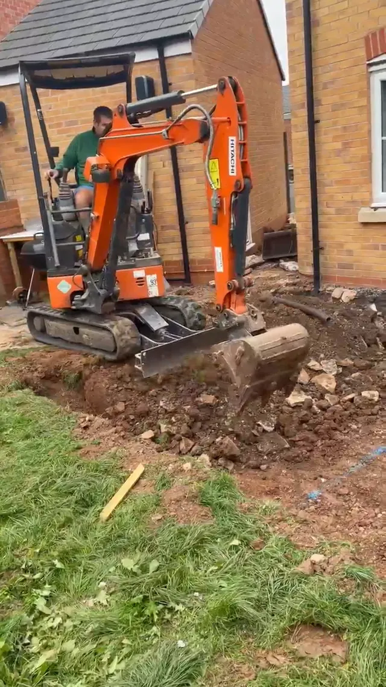
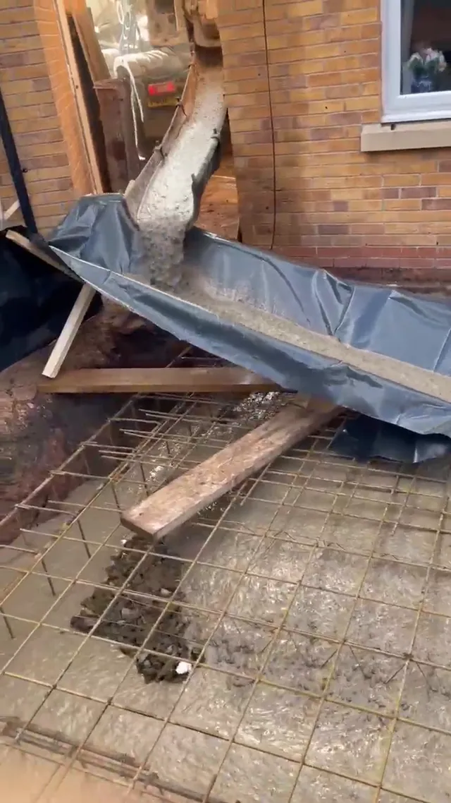
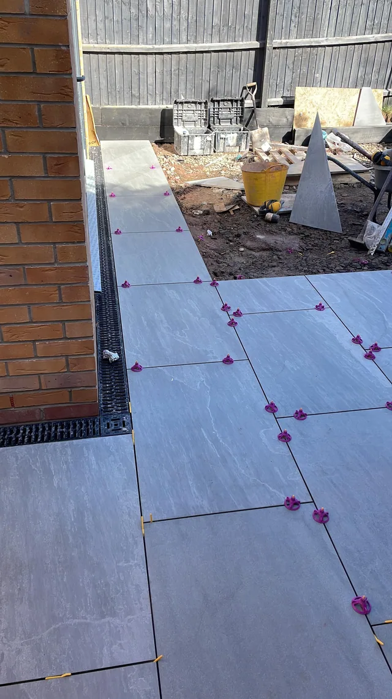

The bit nobody photographs
What the middle of a job actually looks like.
Four different jobs, none of them finished in the picture. This is the part a brochure leaves out, and it is the part that decides whether the finish holds up.

Digging out a rear garden for a new patio and its drainage. Our own machine, our own operator.

Concrete going over the mesh. Everything you will never see again once the slabs are down.

Porcelain going down on spacers, cut to the channel drain along the wall.

Taking an old hallway floor back to nothing before the new one goes in.